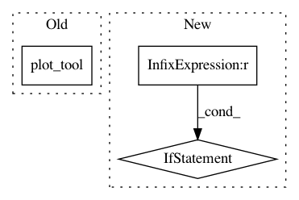

37014059366b55d8293dc38898769d28410e3926,scanpy/tools/dpt.py,,plot_dpt,#Any#Any#Any#Any#Any#Any#Any#Any#Any#Any#Any#Any#,122
Before Change
if smp is not None:
smps += smp.split(",")
plott.plot_tool(adata,
basis=basis,
toolkey="dpt_" + basis,
smp=smps,
names=names,
comps=comps,
cont=cont,
layout=layout,
legendloc=legendloc,
cmap=cmap,
pal=pal,
right_margin=right_margin,
size=size)
def plot_segments_pseudotime(adata, cmap=None, pal=None):
Helper function for plot.
After Change
right_margin=right_margin,
size=size)
writekey = sett.basekey + "_dpt_"+ basis
writekey += "_" + ("-".join(smps) if smps[0] is not None else "") + sett.plotsuffix
plott.savefig(writekey)
// plot segments and pseudotime
plot_segments_pseudotime(adata, "viridis" if cmap is None else cmap)
In pattern: SUPERPATTERN
Frequency: 3
Non-data size: 3
Instances
Project Name: theislab/scanpy
Commit Name: 37014059366b55d8293dc38898769d28410e3926
Time: 2017-03-05
Author: f.alex.wolf@gmx.de
File Name: scanpy/tools/dpt.py
Class Name:
Method Name: plot_dpt
Project Name: theislab/scanpy
Commit Name: 9e89e0a6576c8ae04ce97c296fe8fd9dc5ee419f
Time: 2017-02-13
Author: f.alex.wolf@gmx.de
File Name: scanpy/tools/dpt.py
Class Name:
Method Name: plot
Project Name: theislab/scanpy
Commit Name: 37014059366b55d8293dc38898769d28410e3926
Time: 2017-03-05
Author: f.alex.wolf@gmx.de
File Name: scanpy/tools/dbscan.py
Class Name:
Method Name: plot_dbscan